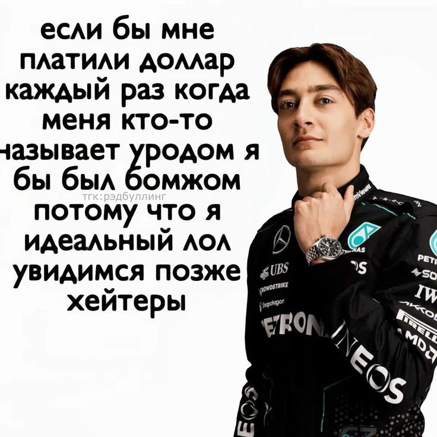
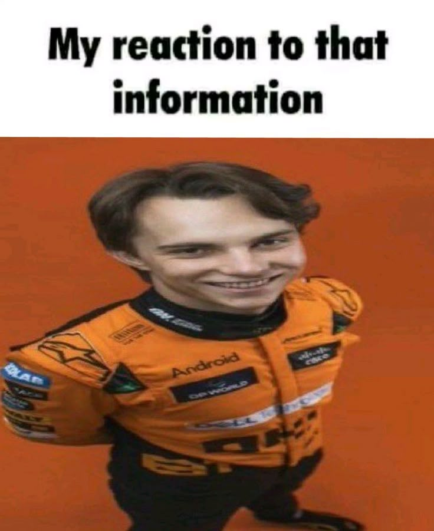
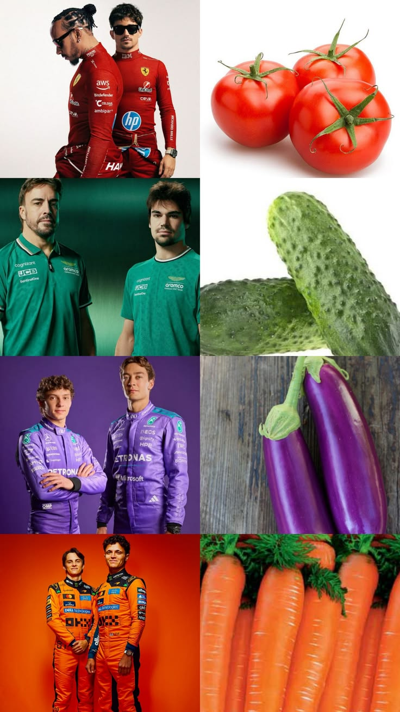
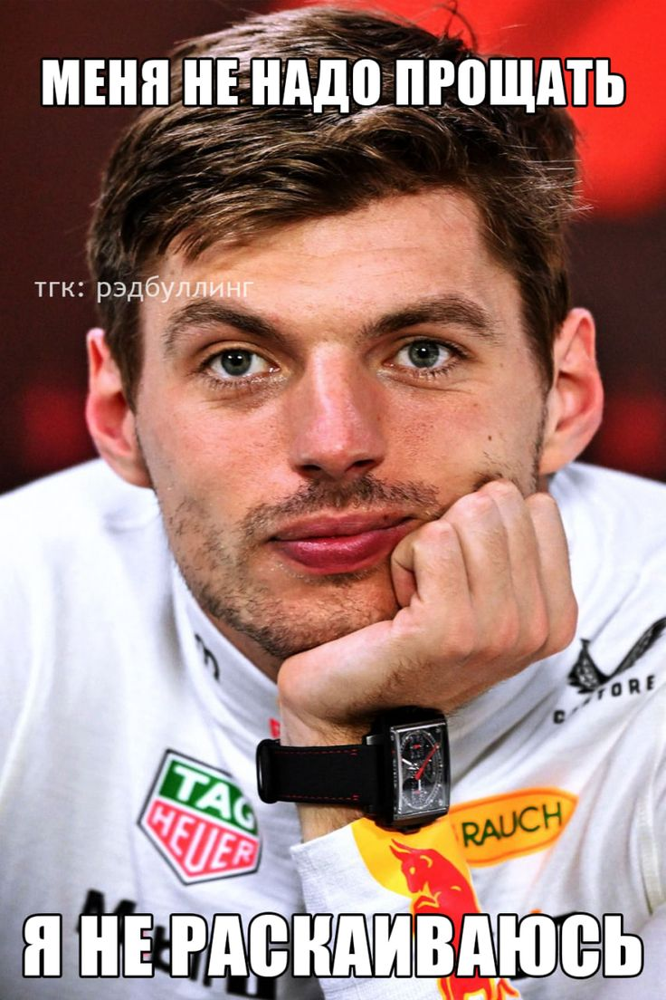
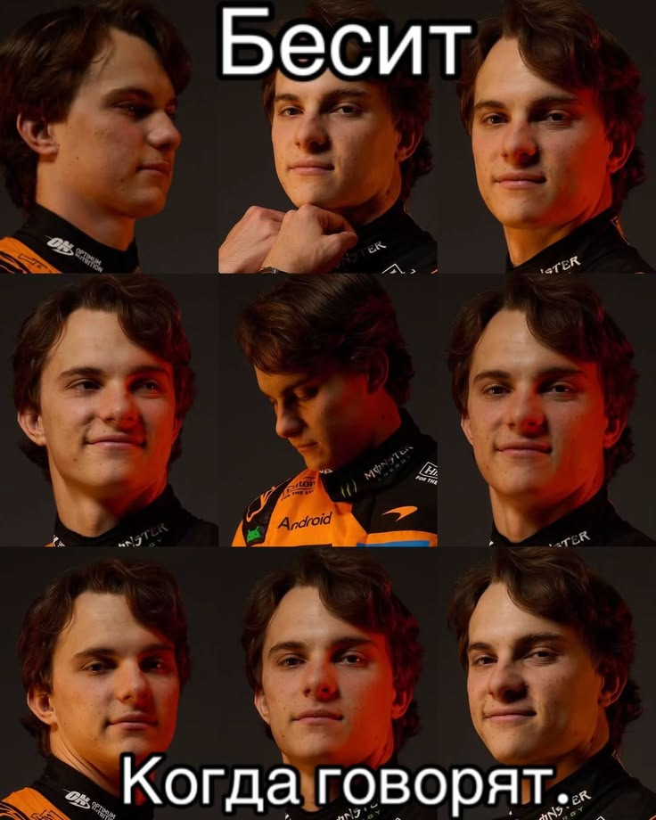

Уи́льям Па́трик Спе́нсер Голд (род. 14 сентября 1996[2], Лоустофт), более известный как Уи́лбур Сут — британский летсплейщик, стример Twitch и автор песен. Впервые стал известен в 2017 году благодаря работе над SootHouse, где он неоднократно появлялся и был главным редактором. Позже, 29 марта 2019 года, Вилл открыл свой собственный канал «Wilbur Soot». Голд выпустил свой первый сингл «The 'Nice Guy' Ballad» в январе 2018 года[3]. Его сингл «Your New Boyfriend» достиг 65-й строчки в UK Singles Chart, опубликованном Official Charts Company[4].
Хотя в основном он известен как стример, Голд также является музыкантом и мультиинструменталистом[1] и выпустил свой первый сингл «The 'Nice Guy' Ballad»[3] в январе 2018 года. Впервые Голд попал в чарт со своим шестым синглом «Your New Boyfriend», выпущенным в декабре 2020 года, который достиг пика в британском чарте синглов под номером 65[4] Песня также появилась в британском инди-чарте и ирландском чарте синглов, где заняла 10-е и 100-е места соответственно[10][11]. Голд также появился в Billboard Emerging Artists Chart[12] и Rolling StoneTop Breakthrough Chart[13]. В 2021 году в Брайтоне была основана инди-рок группа Lovejoy, участниками которой являются Голд (Вокалы, гитара), Джо Голдсмит (Гитара), Эш Кабосу (бас) и Марк Бордмэн (барабаны). Дебютный EP группы, Are You Alright?, вышел 9 мая 2021 года. Второй альбом, Pebble Brain, вышел 14 октября.
Будучи выпускником колледжа Восточного Сассекса, Вилл стал известен как редактор группового канала SootHouse, основанного Голдом и некоторыми из его друзей. Канал в основном состоял из реакций на видео, вроде мемов и life-hack’ов и других тем[3]. 29 марта 2019 года он создал свой основной канал «Wilbur Soot». На своем основном канале Голд в основном выпускает видео, относящиеся к видеоиграм, чаще всего по песочнице Minecraft. Вилл также активно ведет прямые трансляции на Twitch[1], где по состоянию на март 2021 года у него было более 2,7 миллиона подписчиков, что поставило его на 48-е место среди каналов по посещаемости на платформе[5]. В начале 2020 года Голд присоединился к ролевому серверу Minecraft Dream SMP, владельцем которого является ютубер Dream. Там Вилл стал ведущим сценаристом[6]. Голд также участвовал в нескольких турнирах Minecraft, включая MC Championships и Minecraft Monday[7][8]. В январе 2021 года он был одним из восьми участников шахматного турнира BlockChamps, организованного мастером ФИДЕ Александрой Ботез и её сестрой Андреа. Голд выбыл в первом раунде турнира, когда проиграл своему коллеге по YouTube и стримеру Twitch GeorgeNotFound[9].
Архив




Цитаты
"В целом, конечно, граница обучения кадров напрямую зависит от благоприятных перспектив..."
Произведения
- "Шепот Забытых Звезд" — Ариадна Вольф
- "Хроники Империи: Восход Тени" — Элиас Вейн
- "Искусство Невидимого Садоводства" — Серафима Грин

Книги
С другой стороны, высококачественный прототип будущего проекта однозначно фиксирует необходимость своевременного выполнения сверхзадачи...